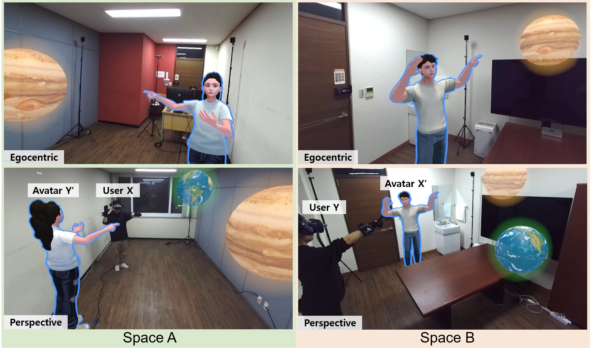
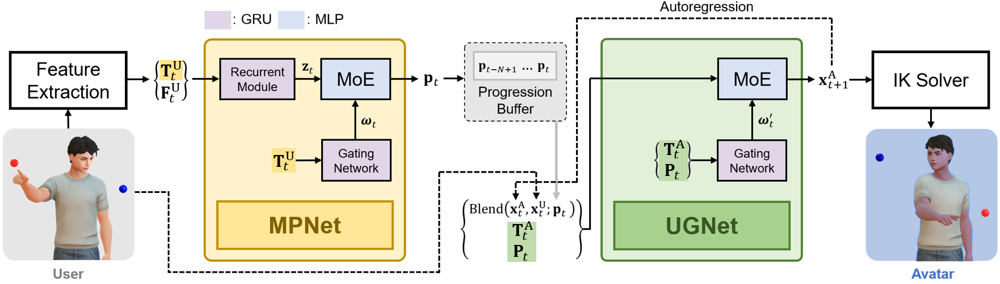

Real-time Translation of Upper-body Gestures to Virtual Avatars in Dissimilar Telepresence Environments
Presentation Video
User Evaluation Video
Supplemental Animation Results
Abstract

In mixed reality (MR) avatar-mediated telepresence, avatar movement must be adjusted to convey the user's intent in a dissimilar space. This paper presents a novel neural network-based framework designed for translating upper-body gestures, which adjusts virtual avatar movements in dissimilar environments to accurately reflect the user's intended gestures in real-time. Our framework translates a wide range of upper-body gestures, including eye gaze, deictic gestures, free-form gestures, and the transitions between them. A key feature of our framework is its ability to generate natural upper-body gestures for users of different sizes, irrespective of handedness and eye dominance, even though the training is based on data from a single person. Unlike previous methods that require paired motion between users and avatars for training, our framework uses an unpaired approach, significantly reducing training time and allowing for generating a wider variety of motion types. These advantages were made possible by designing two separate networks: the Motion Progression Network, which interprets sparse tracking signals from the user to determine motion progression, and the Upper-body Gesture Network, which autoregressively generates the avatar's pose based on these progressions. We demonstrate the effectiveness of our framework through quantitative comparisons with state-of-the-art methods, qualitative animation results, and a user evaluation in MR telepresence scenarios.
Method Overview

Real-time Translation of Upper-body Gesture: Different Users and Avatars
(Subject Height – 161, 172, 173, 174, 180cm)
Upper-body gestures of test subjects with diverse heights, handedness, arm lengths, and eye dominance (left) and the avatar motions translated in real time by our framework (right). The targets are placed at different positions for the user and the avatar. Although trained on the motion data of a single 170 cm, right-handed, right-eye dominant subject, our framework generalizes to all test subjects.
Comparison with State-of-the-art Method
When the user makes a free-form gesture toward the target, our framework accurately translates the gesture toward the avatar's target, whereas AMNet [Kang et al. 2023], trained on paired deictic motion data, produces a wiggling deictic gesture.
Comparison with Alternative Network Architectures
Robustness to the Change of Target Position
As the avatar's target position changes, our framework continuously adapts the avatar's gestures toward its own target while preserving the user's gesture intention.
Robustness to Noisy Tracking in Real-world Scenarios
Our framework maintains animation quality under noisy tracking without noisy data augmentation or noise-specific loss terms, thanks to the motion progression serving as an intermediate representation, the user-invariant angle-based input, and MPNet's 1-second input window.
Different Scale between User and Avatar
UGNet's end-effector output can be adjusted to accommodate size differences between the user and the avatar by scaling the positions (e.g., a 172 cm user and a 189 cm avatar, 10% larger than the user).
Different Skeletal Structure between User and Avatar
Our avatar-invariant output representation (end-effector transformations) allows the translated gestures to be applied to avatars with different skeletal structures through an IK solver.
BibTeX
@article{kang2025real,
title={Real-time Translation of Upper-body Gestures to Virtual Avatars in Dissimilar Telepresence Environments},
author={Kang, Jiho and Kim, Taehei and Kim, Hyeshim and Lee, Sung-Hee},
journal={IEEE Transactions on Visualization and Computer Graphics},
volume={31},
number={10},
pages={8711--8725},
year={2025},
publisher={IEEE},
doi={10.1109/TVCG.2025.3577156}
}